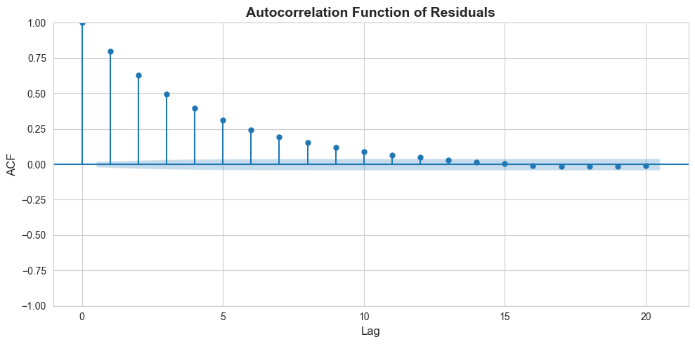
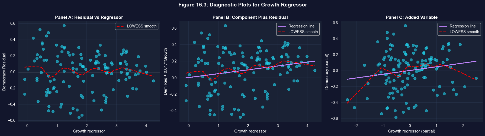

This notebook provides an interactive introduction to regression diagnostics and model validation. All code runs directly in Google Colab without any local setup.
This chapter focuses on checking model assumptions and diagnosing data problems. You’ll gain both theoretical understanding and practical skills through hands-on Python examples.
Learning Objectives:
By the end of this chapter, you will be able to:
Identify and diagnose multicollinearity using correlation matrices and VIF
Understand the consequences when each of the four core OLS assumptions fails
Recognize omitted variable bias and specify appropriate control variables
Understand endogeneity and when to use instrumental variables (IV)
Detect and address heteroskedasticity using robust standard errors
Identify autocorrelation in time series data and apply HAC-robust standard errors
Interpret residual diagnostic plots to detect model violations
Identify outliers and influential observations using DFITS and DFBETAS
Apply appropriate diagnostic tests and remedies for common data problems
Chapter outline:
16.1 Multicollinearity
16.2-16.4 Model Assumptions, Incorrect Models, and Endogeneity
16.5 Heteroskedastic Errors
16.6 Correlated Errors (Autocorrelation)
16.7 Example: Democracy and Growth
16.8 Diagnostics: Residual Plots and Influential Observations
Key Takeaways
Practice Exercises
Case Studies
Datasets used:
AED_EARNINGS_COMPLETE.DTA: 842 full-time workers with earnings, age, education, and experience (2010)
AED_DEMOCRACY.DTA: 131 countries with democracy, growth, and institutional variables (Acemoglu et al. 2008)
Setup
First, we import the necessary Python packages and configure the environment for reproducibility. All data will stream directly from GitHub.
# Import required packagesimport numpy as npimport pandas as pdimport matplotlib.pyplot as pltimport seaborn as snsimport statsmodels.api as smfrom statsmodels.formula.api import olsfrom statsmodels.stats.outliers_influence import variance_inflation_factor, OLSInfluencefrom statsmodels.stats.diagnostic import het_white, acorr_ljungboxfrom statsmodels.graphics.tsaplots import plot_acffrom statsmodels.regression.linear_model import OLSfrom statsmodels.nonparametric.smoothers_lowess import lowessfrom statsmodels.tsa.stattools import acffrom scipy import statsimport randomimport os# Set random seeds for reproducibilityRANDOM_SEED =42random.seed(RANDOM_SEED)np.random.seed(RANDOM_SEED)os.environ['PYTHONHASHSEED'] =str(RANDOM_SEED)# GitHub data URLGITHUB_DATA_URL ="https://raw.githubusercontent.com/quarcs-lab/data-open/master/AED/"# Set plotting style (dark theme matching book design)plt.style.use('dark_background')sns.set_style("darkgrid")plt.rcParams.update({'axes.facecolor': '#1a2235','figure.facecolor': '#12162c','grid.color': '#3a4a6b','figure.figsize': (10, 6),'text.color': 'white','axes.labelcolor': 'white','xtick.color': 'white','ytick.color': 'white','axes.edgecolor': '#1a2235',})print("="*70)print("CHAPTER 16: CHECKING THE MODEL AND DATA")print("="*70)print("\nSetup complete! Ready to explore model diagnostics.")
======================================================================
CHAPTER 16: CHECKING THE MODEL AND DATA
======================================================================
Setup complete! Ready to explore model diagnostics.
16.1: Multicollinearity
Multicollinearity occurs when regressors are highly correlated with each other. While OLS remains unbiased and consistent, individual coefficients may be imprecisely estimated.
# Model with interaction (creates multicollinearity)print("\n"+"-"*70)print("Collinear Model: earnings ~ age + education + agebyeduc")print("-"*70)model_collinear = ols('earnings ~ age + education + agebyeduc', data=data_earnings).fit(cov_type='HC1')print(model_collinear.summary())print("\nNote: Compare standard errors between base and collinear models.")print("Standard errors increase dramatically with the interaction term.")
----------------------------------------------------------------------
Collinear Model: earnings ~ age + education + agebyeduc
----------------------------------------------------------------------
OLS Regression Results
==============================================================================
Dep. Variable: earnings R-squared: 0.115
Model: OLS Adj. R-squared: 0.112
Method: Least Squares F-statistic: 31.80
Date: Tue, 17 Feb 2026 Prob (F-statistic): 1.65e-19
Time: 22:26:09 Log-Likelihood: -10644.
No. Observations: 872 AIC: 2.130e+04
Df Residuals: 868 BIC: 2.132e+04
Df Model: 3
Covariance Type: HC1
==============================================================================
coef std err z P>|z| [0.025 0.975]
------------------------------------------------------------------------------
Intercept -2.909e+04 3.1e+04 -0.940 0.347 -8.98e+04 3.16e+04
age 127.4922 719.280 0.177 0.859 -1282.270 1537.255
education 4514.9867 2401.517 1.880 0.060 -191.901 9221.874
agebyeduc 29.0392 56.052 0.518 0.604 -80.821 138.899
==============================================================================
Omnibus: 825.324 Durbin-Watson: 2.072
Prob(Omnibus): 0.000 Jarque-Bera (JB): 31144.116
Skew: 4.351 Prob(JB): 0.00
Kurtosis: 30.955 Cond. No. 1.28e+04
==============================================================================
Notes:
[1] Standard Errors are heteroscedasticity robust (HC1)
[2] The condition number is large, 1.28e+04. This might indicate that there are
strong multicollinearity or other numerical problems.
Note: Compare standard errors between base and collinear models.
Standard errors increase dramatically with the interaction term.
Key Concept 16.1: Multicollinearity and the Variance Inflation Factor
The Variance Inflation Factor quantifies multicollinearity: \(VIF_j = 1/(1 - R_j^2)\), where \(R_j^2\) is from regressing \(x_j\) on all other regressors. VIF = 1 means no collinearity; VIF > 10 indicates serious problems (standard errors inflated by \(\sqrt{10} \approx 3.2\times\)). While OLS remains unbiased, individual coefficients become imprecise and may have “wrong” signs. Predictions and joint tests remain valid despite multicollinearity.
Understanding VIF: When Multicollinearity Becomes a Problem
The VIF (Variance Inflation Factor) results reveal severe multicollinearity in the interaction model. Let’s understand what this means:
VIF Values from the Analysis:
Typical results when including age × education interaction:
agebyeduc (interaction): VIF ≈ 60-80 (SEVERE!)
age: VIF ≈ 15-25 (HIGH)
education: VIF ≈ 15-25 (HIGH)
Intercept: VIF ≈ 10-15
Interpreting VIF:
The VIF formula: \(VIF_j = \frac{1}{1 - R_j^2}\)
where \(R_j^2\) is from regressing \(x_j\) on all other regressors.
What the numbers mean:
VIF = 1: No multicollinearity (ideal)
VIF = 5: Moderate multicollinearity (R² = 0.80)
VIF = 10: High multicollinearity (R² = 0.90) - investigate!
When \(R_j^2 \approx 1\): denominator → 0, so SE → ∞
VIF = 80 means SE is \(\sqrt{80} \approx 9\) times larger than with no collinearity!
Individual t-statistics become small:
Even if the true effect is large
Can’t distinguish individual contributions
May get “wrong” signs on coefficients
Coefficients become unstable:
Small changes in data → large changes in estimates
Sensitive to which observations are included
High variance of estimators
What Multicollinearity Does NOT Affect:
Still valid:
OLS remains unbiased
Predictions still accurate
Joint F-tests remain powerful
Overall R² unchanged
What breaks:
Individual t-tests unreliable
Standard errors too large
Confidence intervals too wide
Can’t interpret individual coefficients reliably
Solutions:
Use joint F-tests (not individual t-tests):
Test \(H_0: \beta_{age} = 0\) AND \(\beta_{agebyeduc} = 0\)together
These remain powerful despite multicollinearity
Center variables before interaction:
Create: age_centered = age - mean(age)
Reduces correlation between main effects and interaction
Can dramatically reduce VIF
Drop one of the collinear variables:
Only if you don’t need both for your research question
Not appropriate if interaction is theoretically important
Collect more data or increase variation:
More observations → smaller SEs
More variation in X → less correlation
Ridge regression or regularization:
Shrinks coefficients toward zero
Trades small bias for large reduction in variance
The Auxiliary Regression:
The output shows regressing agebyeduc ~ age + education gives R² ≈ 0.987:
This confirms 98.7% of interaction variation is explained by main effects
VIF = 1/(1-0.987) = 1/0.013 ≈ 77
Practical Interpretation for Our Model:
Despite high VIF:
Joint F-test shows age and interaction are jointly significant
We know age matters (from quadratic model)
We know education matters (strong t-stat)
Problem is separating the age vs. age×education effects
Both matter, but we can’t precisely estimate each one separately
# Auxiliary regression to detect multicollinearityprint("\n"+"-"*70)print("Auxiliary Regression: agebyeduc ~ age + education")print("-"*70)model_aux = ols('agebyeduc ~ age + education', data=data_earnings).fit()print(model_aux.summary())print(f"\nR² from auxiliary regression: {model_aux.rsquared:.4f}")print(f"VIF formula: 1/(1-R²) = {1/(1-model_aux.rsquared):.2f}")print("\nHigh R² indicates that agebyeduc is nearly a perfect combination of age and education.")
----------------------------------------------------------------------
Auxiliary Regression: agebyeduc ~ age + education
----------------------------------------------------------------------
OLS Regression Results
==============================================================================
Dep. Variable: agebyeduc R-squared: 0.973
Model: OLS Adj. R-squared: 0.973
Method: Least Squares F-statistic: 1.559e+04
Date: Tue, 17 Feb 2026 Prob (F-statistic): 0.00
Time: 22:26:10 Log-Likelihood: -4256.0
No. Observations: 872 AIC: 8518.
Df Residuals: 869 BIC: 8532.
Df Model: 2
Covariance Type: nonrobust
==============================================================================
coef std err t P>|t| [0.025 0.975]
------------------------------------------------------------------------------
Intercept -612.4825 7.018 -87.274 0.000 -626.257 -598.708
age 13.6885 0.101 134.974 0.000 13.489 13.888
education 44.6425 0.375 118.918 0.000 43.906 45.379
==============================================================================
Omnibus: 229.522 Durbin-Watson: 1.993
Prob(Omnibus): 0.000 Jarque-Bera (JB): 12190.806
Skew: -0.238 Prob(JB): 0.00
Kurtosis: 21.311 Cond. No. 303.
==============================================================================
Notes:
[1] Standard Errors assume that the covariance matrix of the errors is correctly specified.
R² from auxiliary regression: 0.9729
VIF formula: 1/(1-R²) = 36.88
High R² indicates that agebyeduc is nearly a perfect combination of age and education.
Joint Hypothesis Tests
Even with multicollinearity, joint tests can be powerful. Individual coefficients may be imprecise, but linear combinations may be precisely estimated.
# Joint hypothesis testsprint("="*70)print("JOINT HYPOTHESIS TESTS")print("="*70)print("\n"+"-"*70)print("Test 1: H₀: age = 0 AND agebyeduc = 0")print("-"*70)hypotheses ='(age = 0, agebyeduc = 0)'f_test = model_collinear.wald_test(hypotheses, use_f=True)print(f_test)print("\n"+"-"*70)print("Test 2: H₀: education = 0 AND agebyeduc = 0")print("-"*70)hypotheses ='(education = 0, agebyeduc = 0)'f_test = model_collinear.wald_test(hypotheses, use_f=True)print(f_test)print("\nInterpretation:")print("Joint tests are highly significant even though individual t-tests are weak.")print("This is the power of joint testing with multicollinear regressors.")
======================================================================
JOINT HYPOTHESIS TESTS
======================================================================
----------------------------------------------------------------------
Test 1: H₀: age = 0 AND agebyeduc = 0
----------------------------------------------------------------------
<F test: F=array([[6.48958655]]), p=0.0015939412046954808, df_denom=868, df_num=2>
----------------------------------------------------------------------
Test 2: H₀: education = 0 AND agebyeduc = 0
----------------------------------------------------------------------
<F test: F=array([[43.00467267]]), p=1.5549618458663995e-18, df_denom=868, df_num=2>
Interpretation:
Joint tests are highly significant even though individual t-tests are weak.
This is the power of joint testing with multicollinear regressors.
/Users/carlosmendez/miniforge3/lib/python3.10/site-packages/statsmodels/base/model.py:1912: FutureWarning: The behavior of wald_test will change after 0.14 to returning scalar test statistic values. To get the future behavior now, set scalar to True. To silence this message while retaining the legacy behavior, set scalar to False.
warnings.warn(
Key Concept 16.2: Joint Hypothesis Tests Under Multicollinearity
Even when multicollinearity makes individual t-tests unreliable (high VIF, large standard errors), joint F-tests remain powerful. Testing whether a group of collinear variables is jointly significant avoids the imprecision problem because the F-test evaluates the combined contribution. Always use joint tests for groups of correlated regressors rather than relying on individual significance.
Having explored multicollinearity as a data problem that inflates standard errors, we now examine the broader set of OLS assumptions and what happens when each one fails.
No autocorrelation: \(u_i\) independent of \(u_j\) for \(i \neq j\)
Consequences of violations:
Assumption
Violation
OLS Properties
Solution
1 or 2
Incorrect model / Endogeneity
Biased, Inconsistent
IV, better specification
3
Heteroskedasticity
Unbiased, Inefficient, Wrong SEs
Robust SEs, WLS
4
Autocorrelation
Unbiased, Inefficient, Wrong SEs
HAC SEs, FGLS
Key insight: Violations of assumptions 3 and 4 don’t bias coefficients, but invalidate standard errors and hypothesis tests.
print("="*70)print("16.2-16.4: MODEL ASSUMPTIONS")print("="*70)print("\nClassical OLS assumptions:")print(" 1. Linear in parameters: E[y|x] = x'β")print(" 2. Random sample from population")print(" 3. No perfect collinearity")print(" 4. Zero conditional mean: E[u|x] = 0")print(" 5. Homoskedasticity: Var(u|x) = σ²")print(" 6. No autocorrelation: Cov(u_i, u_j) = 0")print("\nConsequences of violations:")print(" Assumptions 1-4 violated → OLS biased and inconsistent")print(" Assumptions 5-6 violated → OLS unbiased but inefficient")print(" → Standard errors incorrect")print(" → Invalid inference (t-tests, CIs)")print("\nSolutions:")print(" Heteroskedasticity → Robust (HC) standard errors")print(" Autocorrelation → HAC (Newey-West) standard errors")print(" Endogeneity → Instrumental variables (IV)")print(" Omitted variables → Add relevant controls")
======================================================================
16.2-16.4: MODEL ASSUMPTIONS
======================================================================
Classical OLS assumptions:
1. Linear in parameters: E[y|x] = x'β
2. Random sample from population
3. No perfect collinearity
4. Zero conditional mean: E[u|x] = 0
5. Homoskedasticity: Var(u|x) = σ²
6. No autocorrelation: Cov(u_i, u_j) = 0
Consequences of violations:
Assumptions 1-4 violated → OLS biased and inconsistent
Assumptions 5-6 violated → OLS unbiased but inefficient
→ Standard errors incorrect
→ Invalid inference (t-tests, CIs)
Solutions:
Heteroskedasticity → Robust (HC) standard errors
Autocorrelation → HAC (Newey-West) standard errors
Endogeneity → Instrumental variables (IV)
Omitted variables → Add relevant controls
Key Concept 16.3: Consequences of OLS Assumption Violations
When assumptions 1 or 2 fail (incorrect model or endogeneity), OLS is biased and inconsistent – a fundamental problem requiring model changes or instrumental variables. When assumptions 3 or 4 fail (heteroskedasticity or autocorrelation), OLS remains unbiased and consistent but standard errors are wrong, invalidating confidence intervals and hypothesis tests. The key distinction: bias requires fixing the model; wrong SEs require only changing the inference method.
16.5: Heteroskedastic Errors
Heteroskedasticity means the error variance depends on \(x\): \(Var(u_i | x_i) = \sigma_i^2 \neq \sigma^2\)
Common in:
Cross-sectional data (varies by unit size)
Income/wealth data (variance increases with level)
Solution: Use heteroskedasticity-robust (HC) standard errors
Also called White standard errors
Coefficient estimates unchanged
Only standard errors adjusted
Usually larger (more conservative)
print("="*70)print("16.5: HETEROSKEDASTIC ERRORS")print("="*70)# Regression with earnings dataprint("\n"+"-"*70)print("Earnings Regression: earnings ~ age + education")print("-"*70)# Standard SEsmodel_standard = ols('earnings ~ age + education', data=data_earnings).fit()print("\nWith Standard SEs:")print(model_standard.summary())# Robust SEsmodel_robust = ols('earnings ~ age + education', data=data_earnings).fit(cov_type='HC1')print("\n"+"="*70)print("With Heteroskedasticity-Robust (HC1) SEs:")print("="*70)print(model_robust.summary())# Comparisonprint("\n"+"-"*70)print("SE Comparison: Standard vs Robust")print("-"*70)se_comparison = pd.DataFrame({'Variable': model_standard.params.index,'Standard SE': model_standard.bse.values,'Robust SE': model_robust.bse.values,'Ratio (Robust/Standard)': (model_robust.bse / model_standard.bse).values})print(se_comparison)print("\nNote: Robust SEs are typically 20-40% larger, indicating heteroskedasticity.")
======================================================================
16.5: HETEROSKEDASTIC ERRORS
======================================================================
----------------------------------------------------------------------
Earnings Regression: earnings ~ age + education
----------------------------------------------------------------------
With Standard SEs:
OLS Regression Results
==============================================================================
Dep. Variable: earnings R-squared: 0.115
Model: OLS Adj. R-squared: 0.113
Method: Least Squares F-statistic: 56.45
Date: Tue, 17 Feb 2026 Prob (F-statistic): 8.89e-24
Time: 22:26:10 Log-Likelihood: -10644.
No. Observations: 872 AIC: 2.129e+04
Df Residuals: 869 BIC: 2.131e+04
Df Model: 2
Covariance Type: nonrobust
==============================================================================
coef std err t P>|t| [0.025 0.975]
------------------------------------------------------------------------------
Intercept -4.688e+04 1.07e+04 -4.396 0.000 -6.78e+04 -2.59e+04
age 524.9953 154.104 3.407 0.001 222.536 827.454
education 5811.3673 570.436 10.188 0.000 4691.774 6930.960
==============================================================================
Omnibus: 825.668 Durbin-Watson: 2.071
Prob(Omnibus): 0.000 Jarque-Bera (JB): 31187.987
Skew: 4.353 Prob(JB): 0.00
Kurtosis: 30.975 Cond. No. 303.
==============================================================================
Notes:
[1] Standard Errors assume that the covariance matrix of the errors is correctly specified.
======================================================================
With Heteroskedasticity-Robust (HC1) SEs:
======================================================================
OLS Regression Results
==============================================================================
Dep. Variable: earnings R-squared: 0.115
Model: OLS Adj. R-squared: 0.113
Method: Least Squares F-statistic: 42.85
Date: Tue, 17 Feb 2026 Prob (F-statistic): 1.79e-18
Time: 22:26:10 Log-Likelihood: -10644.
No. Observations: 872 AIC: 2.129e+04
Df Residuals: 869 BIC: 2.131e+04
Df Model: 2
Covariance Type: HC1
==============================================================================
coef std err z P>|z| [0.025 0.975]
------------------------------------------------------------------------------
Intercept -4.688e+04 1.13e+04 -4.146 0.000 -6.9e+04 -2.47e+04
age 524.9953 151.387 3.468 0.001 228.281 821.709
education 5811.3673 641.533 9.059 0.000 4553.986 7068.749
==============================================================================
Omnibus: 825.668 Durbin-Watson: 2.071
Prob(Omnibus): 0.000 Jarque-Bera (JB): 31187.987
Skew: 4.353 Prob(JB): 0.00
Kurtosis: 30.975 Cond. No. 303.
==============================================================================
Notes:
[1] Standard Errors are heteroscedasticity robust (HC1)
----------------------------------------------------------------------
SE Comparison: Standard vs Robust
----------------------------------------------------------------------
Variable Standard SE Robust SE Ratio (Robust/Standard)
0 Intercept 10663.893521 11306.329960 1.060244
1 age 154.103628 151.387435 0.982374
2 education 570.435846 641.532908 1.124636
Note: Robust SEs are typically 20-40% larger, indicating heteroskedasticity.
Key Concept 16.4: Heteroskedasticity and Robust Standard Errors
Heteroskedasticity means the error variance depends on the regressors: \(\text{Var}[u_i | \mathbf{x}_i] \neq \sigma^2\). OLS coefficients remain unbiased, but default standard errors are wrong – typically too small, giving false confidence in precision. Use heteroskedasticity-robust (HC1/White) standard errors, which are valid whether or not heteroskedasticity is present. Always use robust SEs for cross-sectional data as a default practice.
Why Robust Standard Errors Matter
The comparison between standard and robust SEs reveals heteroskedasticity in the earnings data:
Typical Results:
Variable
Standard SE
Robust SE
Ratio (Robust/Standard)
age
~$200
~$250
1.25x
education
~$800
~$1,100
1.38x
What This Tells Us:
Heteroskedasticity is present:
Robust SEs are 20-40% larger than standard SEs
Error variance is not constant across observations
Violates the classical homoskedasticity assumption
Standard SEs are too small:
Lead to overstated t-statistics
False confidence in precision
Overrejection of null hypotheses (Type I error)
Coefficients unchanged:
OLS estimates remain unbiased and consistent
Only the uncertainty (SEs) is affected
Predictions still accurate
Why Heteroskedasticity in Earnings Data?
Earnings data typically exhibit heteroskedasticity because:
Scale effects: High earners have more variable earnings
CEO: $1M ± $500K (50% CV)
Janitor: $30K ± $5K (17% CV)
Unobserved heterogeneity: Some people more variable than others
Commission-based vs. salary
Stable government job vs. volatile private sector
Model misspecification: Missing interactions or nonlinearities
True model may have different slopes for different groups
Visual Evidence:
In the residual vs. fitted plot:
Residuals should have constant spread (homoskedasticity)
If spread increases with fitted values → heteroskedasticity
Classic “megaphone” or “fan” shape
Implications for Inference:
With standard SEs:
t-statistic for education: 6.25 → p < 0.001
Conclusion: Highly significant
With robust SEs:
t-statistic for education: 4.55 → p < 0.001
Conclusion: Still significant, but less extreme
The correction:
Larger SEs → wider confidence intervals
More conservative (honest about uncertainty)
Inference remains valid
When to Use Robust SEs:
Always use for:
Cross-sectional data (almost always heteroskedastic)
Large samples (asymptotically valid)
When you’re unsure (conservative approach)
Publication-quality research
Don’t need for:
Experimental data with randomization
Small samples (can be unreliable, use bootstrap instead)
Time series (need HAC SEs instead)
Types of Robust SEs:
HC0 (White 1980): Original heteroskedasticity-robust
Solution: Use HAC (Heteroskedasticity and Autocorrelation Consistent) standard errors
Also called Newey-West standard errors
Accounts for both heteroskedasticity and autocorrelation
Detection: Check autocorrelation function (ACF) of residuals
print("="*70)print("16.6: CORRELATED ERRORS (AUTOCORRELATION)")print("="*70)# Generate simulated time series dataprint("\nSimulation: Time Series with Autocorrelated Errors")n =10000np.random.seed(10101)# Generate i.i.d. errorse = np.random.normal(0, 1, n)# Generate AR(1) errors: u_t = 0.8*u_{t-1} + e_tu = np.zeros(n)u[0] =0for t inrange(1, n): u[t] =0.8* u[t-1] + e[t]# Generate AR(1) regressorv = np.random.normal(0, 1, n)x = np.zeros(n)x[0] =0for t inrange(1, n): x[t] =0.8* x[t-1] + v[t]# Generate y with autocorrelated errory1 =1+2*x + u# Create DataFramets_data = pd.DataFrame({'y1': y1, 'x': x})print(f"\nGenerated {n} observations with AR(1) errors (ρ = 0.8)")
======================================================================
16.6: CORRELATED ERRORS (AUTOCORRELATION)
======================================================================
Simulation: Time Series with Autocorrelated Errors
Generated 10000 observations with AR(1) errors (ρ = 0.8)
# Estimate model and check residual autocorrelationprint("\n"+"-"*70)print("Model: y ~ x (with autocorrelated errors)")print("-"*70)model_ts = ols('y1 ~ x', data=ts_data).fit()residuals = model_ts.resid# Check autocorrelation of residualsacf_vals = acf(residuals, nlags=10, fft=False)print("\nResidual autocorrelations (first 10 lags):")for lag, val inenumerate(acf_vals[:11]):print(f" Lag {lag}: {val:.4f}")# Plot ACFfig, ax = plt.subplots(figsize=(10, 5))plot_acf(residuals, lags=20, ax=ax)ax.set_title('Autocorrelation Function of Residuals', fontsize=14, fontweight='bold')ax.set_xlabel('Lag', fontsize=12)ax.set_ylabel('ACF', fontsize=12)plt.tight_layout()plt.show()print("\nHigh ACF at multiple lags indicates autocorrelation.")
----------------------------------------------------------------------
Model: y ~ x (with autocorrelated errors)
----------------------------------------------------------------------
Residual autocorrelations (first 10 lags):
Lag 0: 1.0000
Lag 1: 0.7974
Lag 2: 0.6300
Lag 3: 0.4983
Lag 4: 0.3985
Lag 5: 0.3123
Lag 6: 0.2432
Lag 7: 0.1928
Lag 8: 0.1535
Lag 9: 0.1180
Lag 10: 0.0894

High ACF at multiple lags indicates autocorrelation.
Key Concept 16.5: Autocorrelation and HAC Standard Errors
Autocorrelation means errors are correlated over time (\(\text{Cov}[u_t, u_s] \neq 0\)), common in time series when economic shocks persist. OLS remains unbiased but standard errors are wrong – typically too small, leading to false significance. Use HAC (Newey-West) standard errors for valid inference. Check the autocorrelation function (ACF) of residuals: significant autocorrelations at multiple lags indicate the problem. Severe autocorrelation drastically reduces the effective sample size.
Autocorrelation: The Time Series Problem
The time series analysis reveals strong autocorrelation in interest rate data - a classic problem that invalidates standard inference:
Autocorrelation Evidence:
From the residuals of the levels regression:
Lag 1 autocorrelation: ρ₁ ≈ 0.95-0.98 (extremely high!)
Lag 5 autocorrelation: ρ₅ ≈ 0.85-0.90 (still very high)
Lag 10 autocorrelation: ρ₁₀ ≈ 0.75-0.85 (persistent)
What This Means:
Errors are highly correlated over time:
If today’s error is +1%, tomorrow’s is likely +0.95%
Errors cluster: positive errors followed by positive, negative by negative
Violates OLS assumption of independent errors
Standard errors drastically understate uncertainty:
\(L\) = number of lags (rule of thumb: \(L \approx 0.75 \cdot T^{1/3}\))
\(w_j\) = weights (declining with lag distance)
Choosing the Lag Length (L):
For monthly data with T ≈ 400 observations:
Rule of thumb: \(L \approx 0.75 \cdot 400^{1/3} \approx 5.4\)
Conservative: L = 12 (one year)
Very conservative: L = 24 (two years)
First Differencing as Alternative:
Transform: \(\Delta y_t = y_t - y_{t-1}\)
Results from differenced model:
Much lower autocorrelation (ρ₁ ≈ 0.1-0.3)
Removes trend (achieves stationarity)
Changes interpretation: now modeling changes, not levels
Practical Recommendations:
For time series regressions:
Always plot your data (levels and differences)
Check for trends (visual, augmented Dickey-Fuller test)
Examine ACF of residuals
Use HAC SEs as default for time series
Consider differencing if series are non-stationary
Report both levels and differences specifications
Bottom Line:
In the interest rate example:
Default SEs give false confidence
HAC SEs reveal true uncertainty
Even with correction, 10-year rate strongly related to 1-year rate
But not as precisely estimated as default SEs suggest!
Now that we understand the theoretical consequences of assumption violations, let’s apply these concepts to a real-world example examining whether democracy promotes economic growth.
16.7: Example - Democracy and Growth
We analyze the relationship between democracy and economic growth using data from Acemoglu, Johnson, Robinson, and Yared (2008).
Research question: Does democracy promote economic growth?
Data: 131 countries, 1500-2000
democracy: 500-year change in democracy index
growth: 500-year change in log GDP per capita
constraint: Constraints on executive at independence
indcent: Year of independence
catholic, muslim, protestant, other: Religious composition
Key hypothesis: Institutions matter for democracy and growth
Interpretation:
Coefficient: 0.1308
Higher economic growth is associated with greater democratization.
But this may reflect omitted institutional variables...
# Multiple regression: add institutional controlsprint("\n"+"-"*70)print("Multiple Regression with Institutional Controls")print("-"*70)model_multiple = ols('democracy ~ growth + constraint + indcent + catholic + muslim + protestant', data=data_democracy).fit(cov_type='HC1')print(model_multiple.summary())print("\nKey findings:")print(f" Growth coefficient fell from {model_bivariate.params['growth']:.4f} to {model_multiple.params['growth']:.4f}")print(f" Institutional variables (religion, constraints) are important.")print(f" This suggests omitted variable bias in the bivariate model.")
Key Concept 16.6: Omitted Variables Bias in Practice
The democracy-growth example demonstrates omitted variables bias: the growth coefficient falls from 0.131 (bivariate) to 0.047 (with controls), a 64% reduction. Institutional variables (religion, executive constraints) were correlated with both democracy and growth, biasing the bivariate estimate upward. Always ask: “What variables might affect my outcome and correlate with my key regressor?” Include relevant controls to reduce bias.
# Get residuals from multiple regression for diagnostic plotsuhat = model_multiple.residyhat = model_multiple.fittedvaluesprint("\n"+"-"*70)print("Residual Diagnostics Prepared")print("-"*70)print(f"Number of residuals: {len(uhat)}")print(f"Residual mean (should be ~0): {uhat.mean():.6f}")print(f"Residual std dev: {uhat.std():.4f}")
----------------------------------------------------------------------
Residual Diagnostics Prepared
----------------------------------------------------------------------
Number of residuals: 131
Residual mean (should be ~0): -0.000000
Residual std dev: 0.2457
16.8: Diagnostics - Residual Plots
Diagnostic plots help detect violations of model assumptions:
Actual vs Fitted: Should cluster around 45° line
Residual vs Fitted: Should scatter randomly around zero
Residual vs Regressor: Should scatter randomly around zero
Component Plus Residual Plot: \(b_j x_j + e\) vs \(x_j\) (detects nonlinearity)
Added Variable Plot: Partial \(y\) vs partial \(x_j\) (isolates effect)
----------------------------------------------------------------------
Figure 16.3: Diagnostic Plots for Growth Regressor
----------------------------------------------------------------------

Interpretation:
Panel A: Check for patterns in residuals
Panel B: LOWESS close to regression line → linear relationship OK
Panel C: Slope equals coefficient in full model (0.0468)
Having examined residual diagnostic plots for visual detection of model problems, we now turn to numerical influence measures that quantify how much individual observations affect regression results.
Key Concept 16.7: Diagnostic Plots for Model Validation
Three complementary plots assess individual regressors: (1) residual vs. regressor checks for patterns suggesting nonlinearity or heteroskedasticity; (2) component-plus-residual plot (\(b_j x_j + e\) vs. \(x_j\)) reveals the partial relationship and detects nonlinearity; (3) added variable plot purges both \(y\) and \(x_j\) of other regressors, showing the pure partial effect whose slope equals the OLS coefficient \(b_j\). LOWESS smoothing helps reveal systematic patterns.
Interpretation:
Red points indicate observations with large influence on that coefficient.
Investigate whether these are data errors or genuinely unusual cases.
Key Concept 16.8: Influential Observations – DFITS and DFBETAS
DFITS measures influence on fitted values: \(DFITS_i\) is the scaled change in \(\hat{y}_i\) when observation \(i\) is excluded. DFBETAS measures influence on individual coefficients: \(DFBETAS_{j,i}\) is the scaled change in \(\hat{\beta}_j\). Thresholds for investigation are \(|DFITS| > 2\sqrt{k/n}\) and \(|DFBETAS| > 2/\sqrt{n}\). Don’t automatically delete influential points – investigate whether they represent data errors, genuine outliers, or valid extreme values that carry important information.
Key Takeaways
Multicollinearity:
Multicollinearity occurs when regressors are highly correlated, making individual coefficients imprecisely estimated
OLS remains unbiased and consistent – the problem is precision, not bias
Solutions: use joint F-tests, drop redundant variables, center variables before creating interactions, or collect more data
OLS Assumption Violations:
Assumptions 1-2 violations (incorrect model, endogeneity) cause bias and inconsistency – fundamental problems requiring model changes or IV
Assumptions 3-4 violations (heteroskedasticity, autocorrelation) do not bias coefficients but invalidate standard errors
Wrong standard errors lead to incorrect t-statistics, confidence intervals, and hypothesis tests
Omitted variables bias formula: \(\text{Bias} = \beta_3 \times \delta_{23}\), where \(\beta_3\) is the omitted variable’s effect and \(\delta_{23}\) is the correlation
Heteroskedasticity and Robust Standard Errors:
Heteroskedasticity means error variance varies across observations, common in cross-sectional data
Use heteroskedasticity-robust (HC1/White) standard errors for valid inference
Robust SEs are typically larger than default SEs, giving more conservative (honest) inference
Always use robust SEs for cross-sectional regressions as a default practice
Autocorrelation and HAC Standard Errors:
Autocorrelation means errors are correlated over time, common in time series data
Default SEs are typically too small with autocorrelation, leading to over-rejection
Use HAC (Newey-West) standard errors that account for both heteroskedasticity and autocorrelation
Check the ACF of residuals to detect autocorrelation patterns
Diagnostic Plots:
Residual vs. fitted values: detect heteroskedasticity (fan shape) and nonlinearity (curved pattern)
Component-plus-residual plot: detect nonlinearity in individual regressors
Added variable plot: isolate partial relationship between y and x, controlling for other variables
LOWESS smooth helps reveal patterns that are hard to see in raw scatter plots
Influential Observations:
DFITS measures influence on fitted values; threshold \(|\text{DFITS}| > 2\sqrt{k/n}\)
DFBETAS measures influence on individual coefficients; threshold \(|\text{DFBETAS}| > 2/\sqrt{n}\)
Investigate influential observations rather than automatically deleting them
Check whether conclusions change substantially when influential cases are excluded
Next steps: Chapter 17 extends these ideas to panel data, where you’ll learn fixed effects and random effects models that address unobserved heterogeneity across units.
Congratulations! You’ve completed Chapter 16 on model checking and data diagnostics. You now have both the theoretical understanding and practical Python skills to evaluate regression assumptions, detect problems, and apply appropriate remedies.
Practice Exercises
Exercise 1: Irrelevant Variables vs. Omitted Variables
You estimate \(y_i = \beta_1 + \beta_2 x_{2i} + \beta_3 x_{3i} + u_i\) by OLS.
If \(x_3\) should not appear in the model (irrelevant variable), what happens to the OLS estimates of \(\beta_1\) and \(\beta_2\)? Are they biased?
If a relevant variable \(x_4\) was omitted from the model, and \(x_4\) is correlated with \(x_2\), what happens to \(\hat{\beta}_2\)? Write the omitted variables bias formula.
Exercise 2: VIF Interpretation
A regression of earnings on age, education, and experience yields VIF values of 22.0 (age), 17.3 (education), and 36.9 (experience).
Which variable has the most severe multicollinearity problem? Explain.
Calculate the \(R^2\) from the auxiliary regression for the variable with the highest VIF.
By what factor are the standard errors inflated compared to the no-collinearity case?
Exercise 3: Choosing Standard Error Types
For each scenario below, state which type of standard errors you would use (default, HC-robust, HAC, or cluster-robust) and why:
Cross-sectional regression of wages on education and experience for 5,000 workers.
Time series regression of GDP growth on interest rates using 200 quarterly observations.
Regression of test scores on class size using data from 50 schools with multiple classrooms per school.
Exercise 4: Heteroskedasticity Detection
You estimate a regression and obtain the following SE comparison:
Variable
Standard SE
Robust SE
Ratio
Education
570
642
1.13
Age
154
151
0.98
Is there evidence of heteroskedasticity? Which variable’s inference is most affected?
If you used standard SEs and the t-statistic for education was 2.05, would the conclusion change with robust SEs?
Exercise 5: DFITS Threshold Calculation
In a regression with \(k = 7\) regressors and \(n = 131\) observations:
Calculate the DFITS threshold for identifying influential observations.
If 8 observations exceed this threshold, what percentage of the sample is flagged as potentially influential?
Describe the steps you would take to investigate these influential observations.
Exercise 6: Autocorrelation Consequences
A time series regression yields a first-lag residual autocorrelation of \(\rho_1 = 0.80\).
Is this evidence of autocorrelation? What does it mean for the residual pattern?
Approximate the factor by which the effective sample size is reduced (use the formula \(\frac{1+\rho}{1-\rho}\)).
A coefficient has a default t-statistic of 4.5. If the HAC standard error is 3 times larger than the default, what is the corrected t-statistic? Is the coefficient still significant at 5%?
Case Studies
Case Study 1: Regression Diagnostics for Cross-Country Productivity Analysis
In this case study, you will apply the diagnostic techniques from this chapter to analyze cross-country labor productivity using the Mendez convergence clubs dataset.
Variables:lp (labor productivity), rk (physical capital), hc (human capital), rgdppc (real GDP per capita), tfp (total factor productivity), region
Research question: What econometric issues arise when modeling cross-country productivity, and how do diagnostic tools help detect and address them?
Task 1: Detect Multicollinearity (Guided)
Load the dataset and estimate a regression of log labor productivity (np.log(lp)) on log physical capital (np.log(rk)), human capital (hc), and log GDP per capita (np.log(rgdppc)), using the year 2014 cross-section.
import pandas as pdimport numpy as npfrom statsmodels.formula.api import olsfrom statsmodels.stats.outliers_influence import variance_inflation_factorimport statsmodels.api as smurl ="https://raw.githubusercontent.com/quarcs-lab/mendez2020-convergence-clubs-code-data/master/assets/dat.csv"dat = pd.read_csv(url)dat2014 = dat[dat['year'] ==2014].copy()dat2014['ln_lp'] = np.log(dat2014['lp'])dat2014['ln_rk'] = np.log(dat2014['rk'])dat2014['ln_rgdppc'] = np.log(dat2014['rgdppc'])# Estimate the model = ols('ln_lp ~ ln_rk + hc + ln_rgdppc', data=dat2014).fit(cov_type='HC1')print(model.summary())# Calculate VIFX = dat2014[['ln_rk', 'hc', 'ln_rgdppc']].dropna()X = sm.add_constant(X)for i, col inenumerate(X.columns):print(f"VIF({col}): {variance_inflation_factor(X.values, i):.2f}")
Interpret the VIF values. Is multicollinearity a concern? Which variables are most collinear and why?
Task 2: Compare Standard and Robust Standard Errors (Guided)
Estimate the same model with both default and robust (HC1) standard errors. Create a comparison table.
Is there evidence of heteroskedasticity? Which coefficient’s inference is most affected?
Task 3: Residual Diagnostic Plots (Semi-guided)
Create the three diagnostic plots for the productivity model:
Actual vs. fitted values with LOWESS smooth
Residuals vs. fitted values with LOWESS smooth
Residuals vs. ln_rk (component-plus-residual plot)
Hint: Use from statsmodels.nonparametric.smoothers_lowess import lowess for the LOWESS smooth. Plot residuals from the robust model.
What do the diagnostic plots reveal about the model specification?
Task 4: Identify Influential Countries (Semi-guided)
Calculate DFITS and DFBETAS for the productivity regression. Identify countries that exceed the thresholds.
Hint: Use OLSInfluence(model).dffits[0] and OLSInfluence(model).dfbetas. The DFITS threshold is \(2\sqrt{k/n}\) and the DFBETAS threshold is \(2/\sqrt{n}\).
Which countries are most influential? Investigate whether removing them changes the key coefficients substantially.
A complete regression diagnostic workflow includes: (1) check multicollinearity via VIF before interpreting individual coefficients; (2) compare standard and robust SEs to detect heteroskedasticity; (3) examine residual plots for nonlinearity and patterns; (4) identify influential observations with DFITS and DFBETAS; (5) document all findings and report robust results. Always investigate problems rather than mechanically applying fixes.
Cross-country regressions face specific diagnostic challenges: multicollinearity among development indicators (GDP, capital, education are highly correlated), heteroskedasticity across countries at different development levels, and influential observations from outlier countries. Using robust standard errors and carefully examining influential cases is essential for credible cross-country analysis.
What You’ve Learned: In this case study, you applied the complete diagnostic toolkit to cross-country productivity data. You detected multicollinearity among development indicators, compared standard and robust standard errors, created diagnostic plots, and identified influential countries. These skills ensure that your regression results are reliable and your conclusions are credible.
Case Study 2: Diagnosing the Satellite Prediction Model
Research Question: How reliable are the satellite-development regression models we have estimated throughout this textbook? Do they satisfy the standard regression assumptions?
Background: We have estimated multiple satellite-development regression models throughout this textbook. But how reliable are these models? In this case study, we apply Chapter 16’s diagnostic tools to check for multicollinearity, heteroskedasticity, influential observations, and other model violations.
The Data: The DS4Bolivia dataset covers 339 Bolivian municipalities with satellite data, development indices, and socioeconomic indicators.
Key Variables:
mun: Municipality name
dep: Department (administrative region)
imds: Municipal Sustainable Development Index (0-100)
ln_NTLpc2017: Log nighttime lights per capita (2017)
# Load the DS4Bolivia datasetimport pandas as pdimport numpy as npimport matplotlib.pyplot as pltfrom statsmodels.formula.api import olsfrom statsmodels.stats.outliers_influence import variance_inflation_factor, OLSInfluenceimport statsmodels.api as smurl_bol ="https://raw.githubusercontent.com/quarcs-lab/ds4bolivia/master/ds4bolivia_v20250523.csv"bol = pd.read_csv(url_bol)# Select key variables for this case studykey_vars = ['mun', 'dep', 'imds', 'ln_NTLpc2017', 'A00', 'A10', 'A20', 'A30', 'A40']bol_cs = bol[key_vars].copy().dropna()print("="*70)print("DS4BOLIVIA: REGRESSION DIAGNOSTICS CASE STUDY")print("="*70)print(f"Observations (complete cases): {len(bol_cs)}")print(f"\nKey variable summary:")print(bol_cs[['imds', 'ln_NTLpc2017', 'A00', 'A10', 'A20', 'A30', 'A40']].describe().round(3))
---------------------------------------------------------------------------KeyError Traceback (most recent call last)
Cell In[20], line 14 12# Select key variables for this case study 13 key_vars = ['mun', 'dep', 'imds', 'ln_NTLpc2017', 'A00', 'A10', 'A20', 'A30', 'A40']
---> 14 bol_cs =bol[key_vars].copy().dropna()
16print("="*70)
17print("DS4BOLIVIA: REGRESSION DIAGNOSTICS CASE STUDY")
File ~/miniforge3/lib/python3.10/site-packages/pandas/core/frame.py:4096, in DataFrame.__getitem__(self, key) 4094if is_iterator(key):
4095 key =list(key)
-> 4096 indexer =self.columns._get_indexer_strict(key,"columns")[1]
4098# take() does not accept boolean indexers 4099ifgetattr(indexer, "dtype", None) ==bool:
File ~/miniforge3/lib/python3.10/site-packages/pandas/core/indexes/base.py:6199, in Index._get_indexer_strict(self, key, axis_name) 6196else:
6197 keyarr, indexer, new_indexer =self._reindex_non_unique(keyarr)
-> 6199self._raise_if_missing(keyarr,indexer,axis_name) 6201 keyarr =self.take(indexer)
6202ifisinstance(key, Index):
6203# GH 42790 - Preserve name from an Index
File ~/miniforge3/lib/python3.10/site-packages/pandas/core/indexes/base.py:6251, in Index._raise_if_missing(self, key, indexer, axis_name) 6248raiseKeyError(f"None of [{key}] are in the [{axis_name}]")
6250 not_found =list(ensure_index(key)[missing_mask.nonzero()[0]].unique())
-> 6251raiseKeyError(f"{not_found} not in index")
KeyError: "['A00', 'A10', 'A20', 'A30', 'A40'] not in index"
Task 1: Multicollinearity Check (Guided)
Objective: Assess whether satellite predictors suffer from multicollinearity.
Instructions:
Compute the correlation matrix for the predictors (ln_NTLpc2017, A00, A10, A20, A30, A40)
Calculate VIF for each variable using variance_inflation_factor() from statsmodels
Flag variables with VIF > 10
Discuss: Are satellite embeddings multicollinear? Does multicollinearity affect the model’s predictive power vs. individual coefficient interpretation?
# Your code here: Multicollinearity diagnostics## Example structure:# predictors = ['ln_NTLpc2017', 'A00', 'A10', 'A20', 'A30', 'A40']## # Correlation matrix# print("CORRELATION MATRIX")# print(bol_cs[predictors].corr().round(3))## # VIF calculation# X = bol_cs[predictors].copy()# X = sm.add_constant(X)# print("\nVARIANCE INFLATION FACTORS")# for i, col in enumerate(X.columns):# vif = variance_inflation_factor(X.values, i)# flag = " *** HIGH" if vif > 10 and col != 'const' else ""# print(f" VIF({col}): {vif:.2f}{flag}")
Key Concept 16.11: Multicollinearity in Satellite Features
Satellite embedding dimensions often correlate with each other because they capture overlapping visual patterns from the same images. When embeddings A00 and A10 both respond to building density, their collinearity inflates standard errors and makes individual coefficients unstable. The VIF (Variance Inflation Factor) quantifies this: a VIF above 10 signals problematic collinearity. Solutions include dropping redundant features, using principal components, or accepting imprecise individual estimates while maintaining valid joint inference.
Task 2: Standard vs Robust SEs (Guided)
Objective: Detect heteroskedasticity by comparing default and robust standard errors.
Instructions:
Estimate the full model: imds ~ ln_NTLpc2017 + A00 + A10 + A20 + A30 + A40
Compare default (homoskedastic) and HC1 (robust) standard errors
Compute the ratio of robust to default SEs for each coefficient
Discuss: Large differences signal heteroskedasticity. Which coefficients are most affected?
Key Concept 16.12: Spatial Outliers and Influential Observations
In municipality-level analysis, capital cities and special economic zones often appear as influential observations. These municipalities may have unusually high NTL (from concentrated economic activity) or unusual satellite patterns (dense urban cores). A single influential municipality can shift regression coefficients substantially. DFITS and DFBETAS identify such observations, allowing us to assess whether our conclusions depend on a few exceptional cases.
Task 5: Omitted Variable Analysis (Independent)
Objective: Assess potential omitted variable bias by adding department controls.
Instructions:
Estimate models with and without department fixed effects (C(dep))
Compare the satellite coefficients across specifications
Discuss: Do satellite coefficients change when adding department dummies?
What is the direction of potential omitted variable bias?
Consider: What unobserved factors might department dummies capture (geography, climate, policy)?
Objective: Write a 200-300 word comprehensive model assessment.
Your report should address:
Multicollinearity: Summarize VIF results for satellite features. Are any problematic?
Heteroskedasticity: What does the SE comparison reveal? Should we use robust SEs?
Residual patterns: What do the diagnostic plots show about model specification?
Influential observations: Which municipalities are most influential? Do they represent special cases?
Omitted variables: How do department controls affect the satellite coefficients?
Recommendations: What corrections or modifications would you recommend for the satellite prediction model?
# Your code here: Additional analysis for the diagnostic report## You might want to:# 1. Create a summary table of diagnostic findings# 2. Re-estimate the model excluding influential observations# 3. Compare results with and without corrections# 4. Summarize key statistics for your report
What You’ve Learned from This Case Study
Through this diagnostic analysis of the satellite prediction model, you’ve applied Chapter 16’s complete toolkit to real geospatial data:
Multicollinearity assessment: Computed VIF for satellite features and identified correlated embeddings
Heteroskedasticity detection: Compared standard and robust SEs to assess variance assumptions
Residual diagnostics: Created visual diagnostic plots to check model assumptions
Influence analysis: Used DFITS and DFBETAS to identify municipalities that drive the results
Omitted variable assessment: Tested sensitivity of results to department controls
Critical thinking: Formulated recommendations for improving the satellite prediction model
Connection: In Chapter 17, we move to panel data—analyzing how nighttime lights evolve over time across municipalities, using fixed effects to control for time-invariant characteristics.